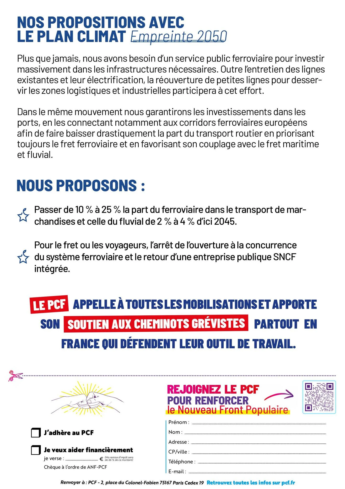

Prise de position
Nous soutenons les cheminots en grève pour le service public ferroviaire
Date indiquée par Facebook · 21 novembre 2024
Repères éditoriaux
Nous avons exprimé notre soutien aux cheminots grévistes. Le tract joint expose les propositions du PCF pour le fret SNCF et le développement du rail.
Texte conservé avec la publication
Soutien aux cheminots grévistes qui défendent le service public ferroviaire !

Sources
Archive rouge · export Facebook · AR-0002-FB-01240
À lire aussi · Le PCF dénonce la privatisation du fret ferroviaire